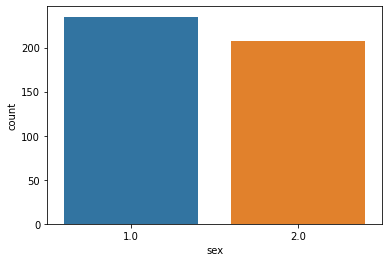
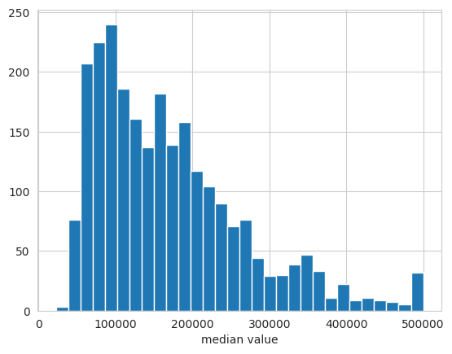
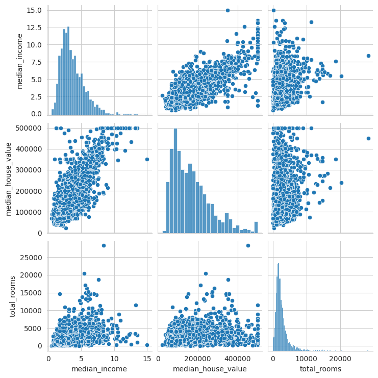
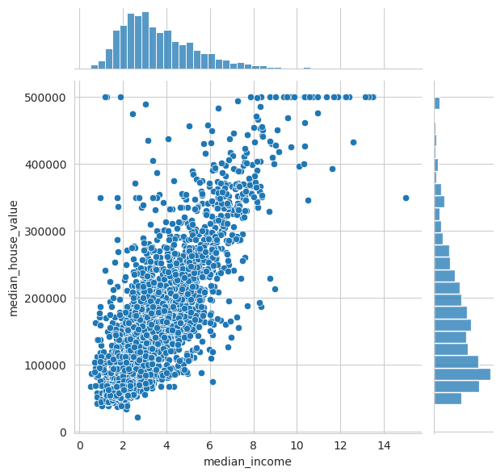
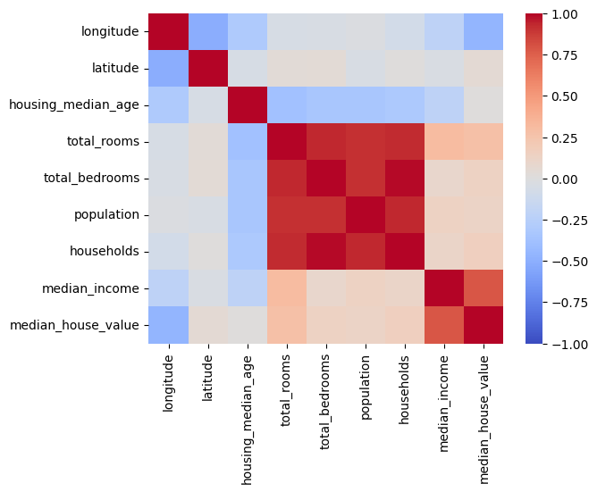
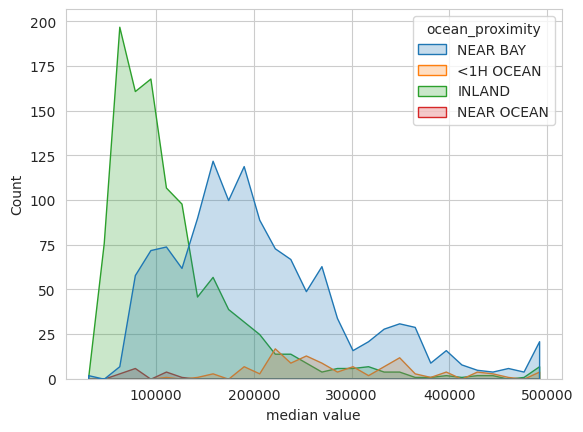

Chapter 2 Data: Representation, Analysis & Processing
2.1 Similarity and Distance Measures
Choosing the right distance measures is important for achieving good results in statistics, predictions and clusterings.
2.1.1 Metrics
For a distance measure to be called a metric \(d\), the following criteria need to be fulfilled:
Positivity: \(d(x_1,x_2)≥0\)
\(d(x_1,x_2)=0 \text{ if and only if } x_1 = x_2\)
Symmetry: \(d(x_1, x_2) = d(x_2, x_1)\)
Triangle inequality: \(d(x_1, x_3) ≤ d(x_1, x_2) + d(x_2, x_3)\)
There may be distance measures that do not fulfill these criteria, but those are not metrics.
2.1.2 Similarity measures on vectors
These measures are used in many objective functions to compare data points.
from sklearn.metrics import pairwise_distances
X1 = np.array([[2,3]])
X2 = np.array([[2,4]])
pairwise_distances(X1,X2, metric="manhattan")The available metrics in sklearn are: ‘cityblock’, ‘cosine’,
‘euclidean’, ‘l1’, ‘l2’, ‘manhattan’, and from scipy: ‘braycurtis’,
‘canberra’, ‘chebyshev’, ‘correlation’, ‘dice’, ‘hamming’, ‘jaccard’,
‘kulsinski’, ‘mahalanobis’, ‘minkowski’, ‘rogerstanimoto’, ‘russellrao’,
‘seuclidean’, ‘sokalmichener’, ‘sokalsneath’, ‘sqeuclidean’, ‘yule’
More info:
scikit-learn.org
2.1.2.1 Manhattan distance
The distance is the sum of the absolute differences of the components (single coordinates) of the two points: \[d(A, B) = \sum_{i=1}^d | A_i - B_i |\]
More info at wikipedia.org.
2.1.2.2 Hamming distance
This metric is used for pairs of strings and works equivalently to the
Manhattan distance. It is the number of positions that are different
between the strings.
More info at
wikipedia.org.
2.1.2.3 Euclidian distance
\[d(A, B) = | A - B | = \sqrt{\sum_{i=1}^d (A_i-B_i)^2} \]
More info on the euclidian distance on
wikipedia.org.
The usefulness of this metric can deteriorate in high dimensional
spaces. See curse of
dimensionality
2.1.2.4 Chebyshev distance
The Chebyshev distance is the largest difference along any of the components of the two vectors.
\[d(A, B) = \max_i(|A_i-B_i|) \]
More info at wikipedia.org.
2.1.2.5 Minkowski Distance
\[d(A, B) = (\sum_{i=1}^d |A_i-B_i|^p)^\frac{1}{p} \]
For \(p=2\) the Minkowski distance is equal to the Euclidian distance, for \(p=1\) it corresponds to the Manhattan distance and it converges to the Chebyshev distance for \(p \to \infty\). More info at wikipedia.org.
2.1.3 Kernels
Kernels are functions that output the relationship between points in your data. They correspond to mapping the data into high-dimensional space and allow to implicitly draw nonlinear decision boundaries with linear models.
2.1.3.1 Closure properties of kernels
If \(k_1\) and \(k_2\) are kernels, then \(k_1 + k_2\) is a kernel as well.
If \(k_1\) and \(k_2\) are kernels, then their product is a kernel as well.
If \(k\) is a kernel and \(\alpha\) is a kernel, then \(\alpha k\) is a kernel as well.
If you define \(k\) only on a set \(D\), then points that are not in \(D\) will have a value of \(k_0=0\) which is still a valid kernel.
2.2 Data Analysis
Data analysis is conducted iteratively once you get hold of your data, when you cleaned it, when you processed it and when you analyse the outputs of your model.
2.2.1 Exploratory data analysis
2.2.1.1 Initial analysis
After getting hold of the data, these are important properties to extract:
import pandas as pd
print("First 5 samples:"
print(df.head())
print(":.. and last 5 samples:")
print(df.tail())
print("First sample per month:")
print(df_transport.groupby('Month').first())
# The number of non-null values and the respective data type per column:
df.info()
# The count, uniques, mean, standard deviation, min, max, quartiles per column:
df.describe(include='all')
print("rows: "+ df.shape[0])
print("columns: "+ df.shape[1])
print("empty rows: "+ df_transport.isnull().sum())Check:
Was the dataset correctly imported?
No column index as first row values.
No trailing comment as last row values.
Are the sample values what you expect?
Are columns in correct and efficient data type?
Has there been a shift of data between columns / rows?
Are there strings in a column for numerical values?
Is the range what you expect?
Are there heavy outliers?
Is the data biased towards certain values?
How many empty values are there?
2.2.1.2 After preprocessing
2.2.1.2.1 Univariate Analysis
Analyse only one attribute.
2.2.1.2.1.1 Categorical / discrete data: Bar chart
Plot the number of occurrences of each category / number. This helps you find the distribution of your data.
import seaborn as sns
sns.countplot(df["sex"])
2.2.1.2.1.2 Continuous data: Histogram
Group data into ranges and plot number of occurrences in each range. This helps you find the distribution of your data.
sns.set_style('whitegrid')
sns.histplot(data=df_USAhousing, x='median_house_value', bins=30)
plt.xlabel('median value')
More info: seaborn.pydata.org
2.2.1.2.2 Multivariate Analysis
2.2.1.2.2.1 Continuous vs Continuous
Scatter-plots plot the values of the datapoints of one attribute on the x-axis and the other attribute on the y-axis. This helps you find the correlations, order of the relationship, outliers etc.
Use a pairplot to make a scatter plot of multiple features against each other.
sns.pairplot(df_USAhousing[["median_income", "median_house_value", "total_rooms"]], diag_kind="hist")
Alternatively use joint plots, to visualize the marginal (univariate) distributions on the sides:
sns.jointplot(data=df_USAhousing, x="median_income", y="median_house_value")
Heatmaps plot the magnitude of values in different categories. It is commonly used in exploratory data analysis to show the correlation of the different attributes.
sns.heatmap(df.corr(), cmap="coolwarm", vmin=-1, vmax=1, annot=True)
More info: seaborn.pydata.org
2.2.1.2.2.2 Continuous vs. Categorical data
Overlapping histograms plot the marginal distribution of the continuous distributions, using different colors for each category:
sns.set_style('whitegrid')
sns.histplot(data=df_USAhousing, x='median_house_value', hue="ocean_proximity", element="poly", bins=30)
plt.xlabel('median value')
Use separate violin plots for each of the different categories:
sns.catplot(data=df, x="cont_col", y="cat_col", hue="binary_col", kind="violin")Use heatmaps with two categorical feature as x- and y-axis respectively and a continuous attribute as magnitude (“heat”).
sns.heatmap(df.pivot(index="cat_col1", columns="cat_col2", values="cont_col"), annot=True, linewidth=0.5)2.2.1.2.2.3 Categorical vs Categorical
Categorical plots plot the count / percentage of different categorical attributes in side-by-side bar charts
sns.catplot(data=df, y="cat_col1", hue="cat_col2", kind="bar")More info: seaborn.pydata.org
2.3 Preprocessing data
2.3.1 Handling missing & wrong data
Some algorithms assume that all features of all samples have numerical values. In these cases missing values have to be imputed (i.e. inferred) or (if affordable) the samples with missing feature values can be deleted from the data set.
2.3.1.1 Iterative imputor by sklearn
For features with missing values, this imputor imputes the missing
values by modelling each feature using the existing values from the
other features. It uses several iterations until the results converge.
! This method scales with \(O(nd^3)\), where \(n\) is the number of
samples and \(d\) is the number of features.
from sklearn.experimental import enable_iterative_imputer # necessary since the imputor is still experimental
from sklearn.impute import IterativeImputer
from sklearn.ensemble import RandomForestRegressor
rf_estimator = RamdomForestRegressor(n_estimators = 8, max_depth = 6, bootstrap = True)
imputor = IterativeImputer(random_state=0, estimator = rf_estimator, max_iter = 25)
imputor.fit_transform(X)More info:
scikit-learn.org
2.3.1.2 Deleting missing values
import pandas as pd
df.dropna(how="any") # how="all" would delete a sample if all values were missingMore info:
pandas.pydata.org
2.3.2 Working with Date and Time
You can convert to the datetime format as follows:
import pandas as pd
pd.to_datetime(df.date_col, infer_datetime_format=True)You create columns for year, month, day like this:
import pandas as pd
df['year'] = df.Date.dt.year
df['month'] = df.Date.dt.month
df['day'] = df.Date.dt.day2.3.3 Encoding & discretizing data
There are multiple ways to encode data, especially non-vectorized data, to make it suitable for machine learning algorithms. The string values (e.g. “male”, “female”) of categorical features have to be converted into integers. This can be done by two methods:
2.3.3.1 Ordinal Encoding
An integer is assigned to each category (e.g. “male”=0, “female”=1)
from sklearn.preprocessing import OrdinalEncoder
ord_enc = preprocessing.OrdinalEncoder()
ord_enc.fit(X)
ord_enc.transform(X)More info:
scikit-learn.org
This method is useful when the categories have an ordered relationship
(e.g. “bad”, “medium”, “good”). If this is not the case (e.g. “dog”,
“cat”, “bunny”) this is to be avoided since the algorithm might deduct
an ordered relationship where there is none. For these cases
one-hot-encoding is to be used.
2.3.3.2 One-Hot Encoding
One-hot encoding assigns a separate feature-column for each category and encodes it binarily (e.g. if the sample is a dog, it has 1 in the dog-column and 0 in the cat and bunny column).
from sklearn.preprocessing import OneHotEncoder
onehot_enc = OneHotEncoder(handle_unknown='ignore')
onehot_enc.fit(X)
onehot_enc.transform(X)More info:
scikit-learn.org
Alternative:
import pandas as pd
pd.get_dummies(X, columns = ["Sex", "Type"], drop_first=True)More info: pandas.pydata.org
2.3.3.3 Discretizing / binning data
You can discretize features and targets from continuous to discrete/categorical (e.g. age in years to child, teenager, adult, elderly).
pd.cut(x=cont_series, bins= 4, labels=["child", "teenager", "adult", "elderly"])More info:
pandas.pydata.org
Pros:
It makes sense for the specific problem (e.g. targeting groups for marketing).
Improved signal-to-noise ratio (bins work like regularization).
possibly highly non-linear relationship of continuous feature to target is hard to learn for model.
Better interpretability of features, results and model.
Can be used to incorporate domain knowledge and make learning easier.
Cons:
Your model and results lose information
Senseless cut-offs between bins can create “artificial noise” and make learning harder.
More info:
stackexchange.com
See also: wikipedia: Sampling (signal
processing).
2.3.3.4 Graph representation of data
The similarity/distance between points can be represented in graphs. The data points are represented as nodes, the distances/similarities as edges.
2.3.4 Standardization
Many machine learning models assume that the features are centered around 0 and that all have a similar variance. Therefore the data has to be centered and scaled to unit variance before training and prediction.
from sklearn.preprocessing import StandardScaler
scaler = StandardScaler()
scaler.fit_transform(input_df)More info: scikit-learn.org
Another option for scaling is normalization. This is used, when the
values have to fall strictly between a max and min value.
More info:
scikit-learn.org
2.3.5 Splitting in training- and test-data
You need to split your training set into test- and training-samples. The algorithm uses the training samples with the known label/target value for fitting the parameters. The test-set is used to determine if the trained algorithm performs well on new samples as well. You need to give special considerations to the following points:
Avoiding data or other information to leak from the training set to the test-set
Validating if the predictive performance deteriorates over time (i.e. the algorithm will perform worse on new samples). This is especially important for models that make predictions for future events.
Conversely, sampling the test- and training-sets randomly to avoid introducing bias in the two sets.
# assuming you already imported the data and separated the label column:
from sklearn.model_selection import train_test_split
X_train, X_test, y_train, y_test = train_test_split(X, y, test_size=0.33, random_state=42)More info: scikit-learn.org
2.3.6 Feature selection
Usually the label does not depend on all available features. To detect
causal features, remove noisy ones and reduce the running and training
costs of the algorithm, we reduce the amount of features to the relevant
ones. This can be done a priori (before training) or using wrapper
methods (integrated with the prediction algorithm to be used).
! There are methods that have feature selection already built-in,
such as decision trees.
2.3.6.1 A priori feature selection
A cheap method is to remove all features with variance below a certain threshold.
from sklearn.feature_selection import VarianceThreshold
selector = VarianceThreshold(threshold=0.1)
selector.fit_transform(X)More info: scikit-learn.org
The Mutual information {#mutual_info} score works by choosing the features that have the highest dependency between the features and the label.
\[ I(X, Y) =D_{KL} \left( P(X=x, Y=y), P(X=x) \otimes P(Y=y) \right) =\sum_{y \in Y} \sum_{x \in X} { P(X=x, Y=y) \log\left(\frac{P(X=x, Y=y)}{P(X=x)P(Y=y)}\right) }\]
where, \(D_{KL}\) is the Kullback–Leibler divergence (A measure of similarity between distributions). The \(\log\)-Term is for quantifying how different the joint distribution is from the product of the marginal distributions.
from sklearn.feature_selection import SelectKBest
from sklearn.feature_selection import mutual_info_classif # for regression use mutual_info_regression
X_new = SelectKBest(mutual_info_classif, k=8).fit_transform(X, y)More [info:\\](info:){.uri}
scikit-learn.org
wikipedia.org/wiki/Mutual_information
2.3.6.2 wrapper methods
Using greedy feature selection as a wrapper method, one commonly starts with 0 features and adds the feature that returns the highest score with the used classifier.
from sklearn.feature_selection import SequentialFeatureSelector
from sklearn.tree import DecisionTreeClassifier
classifier = DecisionTreeClassifier()
selector = SequentialFeatureSelector(classifier, n_features_to_select=8)
selector.fit_transform(X, y)More info: scikit-learn.org
2.3.6.3 Advice & Pitfalls
Selected advice from paper from Guyon and Elisseeff:
If you have domain knowledge: Use it.
Are your features commensurate (same proportion): Normalize them.
Do you suspect interdependent features: Construct conjunctive features or products of features.
Other advice:
Features that are useless on their own, can be useful in combination with other features.
Using multiple redundant variables can be useful to reduce noise.
There are also models (e.g. lasso regression, decision trees) that have feature selection built into the model (i.e. by only allowing for a certain number of features to be used or penalizing the use of additional features).
2.3.7 Hyper-parameter tuning
The hyper-parameters (e.g. kernel, gamma, number of nodes in tree) are
not trained by algorithm itself. An outer loop of hyper-parameter tuning
is needed to find the optimal hyper parameters.
! It is strongly recommended to separate another validation set from
the training set for hyper-parameter tuning (you’ll end up with
training-, validation- and test-set). See Cross Validation
for best practice.
2.3.7.1 Grid search
The classic approach is exhaustive grid search: You create a grid of hyper-parameters and iterate over all combinations. The combination with the best score is used in the end. This approach causes big computational costs due to the combinatorial explosion.
from sklearn.model_selection import GridSearchCV # combines grid search with cross-validation
from sklearn.neighbors import KNeighborsClassifier
kn_model = KNeighborsClassifier(n_neighbors=3)
parameters = {"n_neighbors": range(2,10), "p": [1,2], "weights": ["uniform", "distance"]}
clf = GridSearchCV(kn_model, parameters, cv=5)
clf.fit(X_train, y_train)More info:
scikit-learn.org
2.3.7.2 Randomized search
This approach is used, if there are too many combinations of hyper-parameters for tuning. You allocate a budget of iterations and the combinations of parameters are sampled randomly according to the distributions you provide.
If you want to evaluate on a large set of hyperparameters, you can use a halving strategy: You tune a large combination of parameters on few resources (e.g. samples, trees). The best performing half of candidates is re-evaluated on twice as many resources. This continues until the best-performing candidate is evaluated on the full amount of resources.
from sklearn.ensemble import RandomForestClassifier
from sklearn.experimental import enable_halving_search_cv # since this method is still experimental
from sklearn.model_selection import HalvingRandomSearchCV
from sklearn.utils.fixes import loguniform
rf_clf = RandomForestClassifier()
param_distributions = {"max_depth": [3, None],
"min_samples_split": loguniform(1, 10)}
hypa_search = HalvingRandomSearchCV(rf_clf, param_distributions,
resource='n_estimators',
max_resources=10,
n_jobs=-1, # important since hyper-parameter tuning is very costly
scoring = 'balanced_accuracy',
random_state=0).fit(X, y)More info:
scikit-learn.org
2.3.8 Model selection
The candidates for hyper-parameters must not be evaluated on the same data that you trained it on (over-fitting risk). Thus, we separate another data-set from the training data: The validation set. This is reduces the amount of training data drastically. Therefore we use the approaches of Cross Validation and Bootstrapping.
2.3.8.1 Cross Validation
In k-fold Cross Validation, we split the training set into k sub-sets. We train on the samples in k-1 sub-sets and validate using the data in the remaining sub-set. We iterate until we have validated on each sub-set once. We then average out the k scores we obtain.

Schema of the process for 5-fold Cross Validation. The data is first split into training- and test-data. The training data is split into 5 sub-sets. The algorithm is trained on 4 sub-sets and evaluated on the remaining sub-set. Each sub-set is used for validation once. Source: scikit-learn.org.
from sklearn import svm
from sklearn.model_selection import cross_val_score
SVM_clf = svm.SVC (kernel='polynomial')
cv_scores = cross_val_score(SVM_clf, X, y, cv = 7)
cv_score = cv_scores.mean()More info: scikit-learn.org
! If you have time-series data (and other clearly not i.i.d.) data, you have to use special cross-validation strategies. There are further strategies worth considering.
2.3.8.2 Bootstrapping
Instead of splitting the data into k subsets, you can also just sample
data into training and validation sets.
More info:
wikipedia.org.
2.4 Errors & regularization
There are irreducible errors and reducible errors. Irreducible errors stem from unknown variables or variables we have no data on. Reducible errors are deviations from our model to its desired behavior and can be reduced. Bias and variance are reducible errors.
\[\text{Error} = \text{Bias} + \text{Var} + \text{irr. Error}\]
2.4.1 Bias and Variance
2.4.1.1 Bias of an estimator
Bias tells you if your model oversimplifies the true relationship in
your data (underfitting).
You have a model with a parameter \(\hat{\theta}\) that is an estimator
for the true \(\theta\). You want to know whether your model over- or
underestimates the true \(\theta\) systematically.
\[\text{Bias}[\hat{\theta}]=\text{E}_{X|\mathcal{D}}[\hat{\theta}]- \theta\]
E.g. if the parameter captures how polynomial the model / relationship
of your data is, a too high value means that your model is
underfitting.
More info: wikipedia.org
2.4.1.2 Variance of an estimator
Variance tells you if your model learns from noise instead of the true relationship in your data (overfitting).
\[\text{Var}[\hat{\theta}]=\text{E}_{X|\mathcal{D}}[(\text{E}_{X|\mathcal{D}}[\hat{\theta}]- \hat{\theta})^2]\]
i.e. If you would bootstrap your data, it would show you how much your
parameter would jump around its mean, when it learns from the different
sampled sets.
Your goal is now to find the sweet spot between a too biased (too simple
model) and a model with too high variance (too complex model).

Relationship between bias, variance and the total error. The minimum of the total error lies at the best compromise between bias and variance. Source: User Bigbossfarin on wikimedia.org..
{kind=link}
More info: wikipedia.org
2.4.2 Regularization
To combat overfitting, we can introduce a term into our loss-function that penalizes complex models. For linear regression, our regularized loss function is will be:
\[\min L(\hat{y},y)= \min_{W,b} f(WX+b,y)+\lambda R(W)\] where \(f\) is
the unregularized loss function, \(W\) is the weight matrix, \(X\) is the
sample matrix and \(b\) is the bias or offset term of the model (bias term
\(\neq\) bias of estimator!). \(R\) is the regularization function and
\(\lambda\) is a parameter controlling its strength.
i.e. The regularized loss function punishes large weights \(W\) and leads
to flatter/smoother functions.
More info: wikipedia.org
2.4.3 Bagging
Train several instances of a complex estimator (aka. strong learner, like large decision trees or KNN with small radius) on a subset of the data. Then use a majority vote or average the scores for classifying to get the final prediction. By training on different subsets and averaging the results, the chances of overfitting are greatly reduced.
from sklearn.ensemble import BaggingClassifier
from sklearn.neighbors import KNeighborsClassifier
bagging = BaggingClassifier(KNeighborsClassifier(), max_features=0.5, n_estimators=20)More info:
scikit-learn.org
A classic example for a bagging classifier is Random Forest Classifier or its variant Extremely Randomized Trees which further reduces variance and increases bias.
2.4.4 Boosting
Compared to bagging, we use weak learners that are not trained independently of each other. We start with a single weak learner (e.g. a small decision tree) and repeat the following steps:
- Add an additional model and train it.
- Increase weights of training samples that are falsely classified, decrease weights of correctly classified samples. (to be used by next added model.)
- Reweight results from the models in the combined model to reduce the training error.
The final model is an weighted ensemble of weak classifiers.
The most popular ones are gradient boosted decision
tree
algorithms.
2.4.5 Stacking
Stacking closely resembles bagging: An ensemble of separately trained base models is used to create an ensemble model. However, the continuous (instead of discrete) outputs of commonly fewer heterogeneous models (instead of same type of models) are used. The continuous outputs are then fed into a final estimator (commonly logistic regression classifier).
from sklearn.svm import SVC
from sklearn.neighbors import KNeighborsClassifier
from sklearn.tree import DecisionTreeClassifier
from sklearn.linear_model import LogisticRegression
from sklearn.pipeline import make_pipeline
from sklearn.ensemble import StackingClassifier
classifiers = [
('svc', SVC()),
('knn', KNeighborsClassifier()),
('dtc', DecisionTreeClassifier())
]
clf = StackingClassifier(
classifiers=estimators, final_estimator=LogisticRegression()
)
clf.fit(X, y)More info: scikit-learn.org
2.5 Tips for machine learning projects
2.5.1 General advice
General advice for machine learning from Pedro Domingos:
Let your knowledge about the problem help you choose the candidate algorithms. E.g. You know the rules on which comparing samples makes most sense \(\rightarrow\) Choose instance based learners. If you know that statistical dependencies are relevant \(\rightarrow\) choose Graph based models.
Don’t underestimate the impact of feature engineering: Many domain specific features can boost the accuracy.
Get more samples and candidate features (instead of focussing on the algorithm)
Don’t confuse correlation with causation. Just because your model can predict something, it does not mean that the features cause the target and you thus cannot easily deduct a clear action from it.
2.5.2 Common mistakes
Be aware: This list will never capture everything that can go wrong. ;-)
Data Leakage: Information from Samples in your test data have leaked into your training data.
- You have not deleted duplicates beforehand
- You falsely assumed that your samples where drawn independently and have sampled the training set randomly. (E.g. multiple samples from the same patient, time series data)
- You have the class label encoded in the training features in a way that you will not find in “Nature”.
- You just used the wrong training / test set while programming.
- You did feature engineering like finding n-grams or Max, Min of data using your test-set data.
- Remedy: Careful preliminary data analysis, deduplication,
Using the wrong quality measures on unbalanced data: E.g. Accuracy on unbalanced data is not a reasonable quality measure.
Inconsistent preprocessing: If you preprocess your training data in a certain way, you have to do the same with the test- and prediction-data.
- Remedy: Use one preprocessing pipeline that you can use for training, testing and prediction.
Curse of dimensionality:
- You use too many features for the amount of samples that you have
- Your distance measure is not suitable for high-dimensional space (e.g. Hamming distance, Euclidean distance)
- Remedy: Use lower-dimensional mapping, feature selection.
Overfitting:
- You use a too complex algorithm (too many degrees of freedom) for the amount of data you have
- You have too many features
- Remedy: Get more samples, reduce the dimensionanlity, feature selection, regularization, bagging, boosting, stacking.
Bad Data:
- Your data is not representative of what you would find in the “real world”. (skewed population, too old data, only of specific sensors, locations…)
- Your have many missing values among your features.
- The data that you have is only remotely linked to the target that you want to predict.
- There are erroneous entries in your data.
- Remedy: Clean data at source, impute data, clean data during preprocessing, get more representative data, limit scope of application.